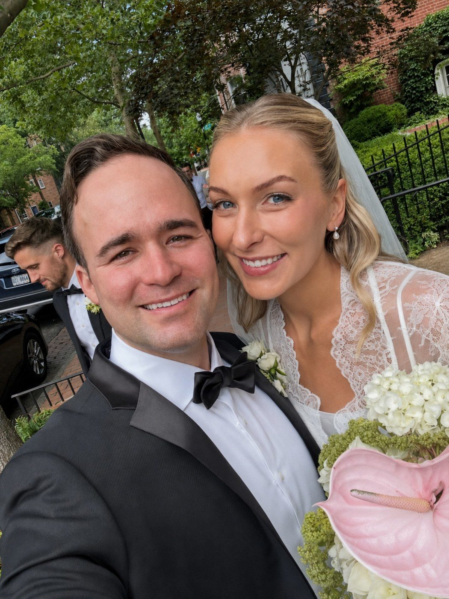

Andrew B. Harris, MD, is a hip and knee replacement surgeon caring for patients at three Chicago offices, in Skokie, Lakeview, and Bucktown, and performing surgery on the city’s North Shore.
Dr. Harris grew up in Boca Raton, Florida, a twin with a younger brother in a family of engineers. He was drawn to orthopaedics for a practical reason: few areas of medicine offer such a direct fix for a specific problem. A worn hip or knee can be measured, planned, and rebuilt, and a patient who arrived limping often walks out on a path back to the things they had given up.

His path began at the University of Florida, where he earned his undergraduate degree before attending the University of Florida College of Medicine. There he received the C. Craig Tischer, M.D. Faculty Award for Research due to his work on improving outcomes for patients undergoing orthopaedic surgery.
He completed his residency in orthopaedic surgery at The Johns Hopkins Hospital, where he was selected by his program director to serve as Education Chief Resident and as the program’s sole representative to the American Academy of Orthopaedic Surgeons (AAOS) Resident Assembly, later elected by his national peers to its Executive Committee.
From there he went on to advanced fellowship training in hip and knee replacement and complex revision joint replacement surgery at the Hospital for Special Surgery (HSS) in New York City. His research remains active, aimed at making hip and knee replacement safer and longer-lasting.
Away from the hospital, Dr. Harris lives in Chicago with his wife, a Chicago native.
